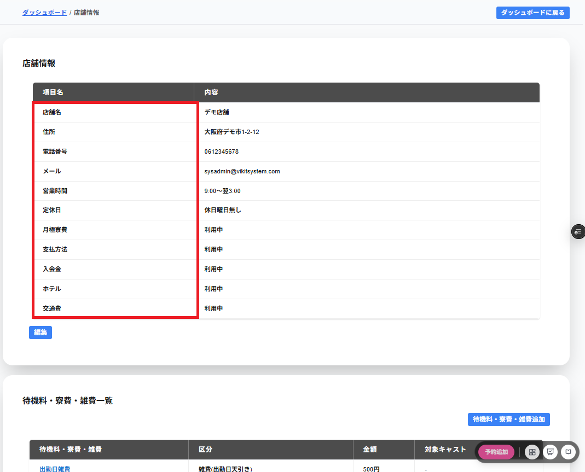

店舗情報には以下の項目が一覧で表示されます。
・店舗名
登録した店舗名が表示されます。
・住所
登録した住所が表示されます。
・電話番号
登録した電話番号が表示されます。
・メール
登録したメールアドレスが表示されます。
※こちらのメールアドレスはログイン時のメールアドレスではありません
・営業時刻
登録した営業の開始時刻と終了時刻が表示されます。
日付をまたぐ場合は、終了時刻の最左部に翌と表示されます。
24時刻営業を選択している場合は24時刻営業と表示されます。
・定休日
登録した定休日が表示されます。
定休日を登録していない場合は休日曜日無しと表示されます。
・月極寮費
月極寮費の利用中を選択している場合は、利用中と表示されます。
※未使用を選択している場合は-と表示されます。
・支払方法
支払方法の利用中を選択している場合は、利用中と表示されます。
※未使用を選択している場合は-と表示されます。
・入会金
入会金の利用中を選択している場合は、利用中と表示されます。
※未使用を選択している場合は-と表示されます。
・ホテル
ホテルの利用中を選択している場合は、利用中と表示されます。
※未使用を選択している場合は-と表示されます。
・交通費
交通費の利用中を選択している場合は、利用中と表示されます。
※未使用を選択している場合は-と表示されます。
・編集
店舗情報を編集することができます。
